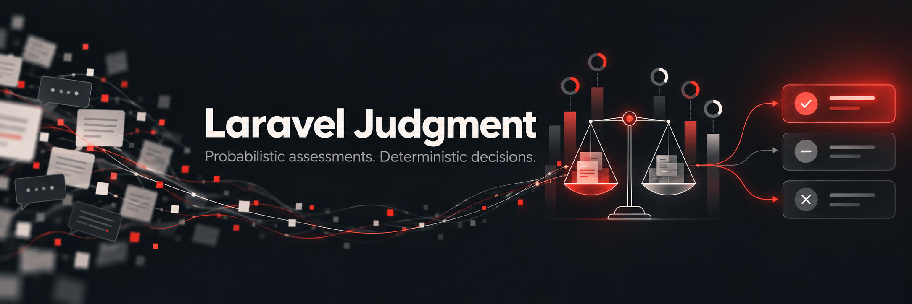

Laravel Judgment
Probabilistic assessments of unstructured evidence, with deterministic, application-owned decisions.
Judgment is for criteria that can only be described, not implemented as hard rules: “is this refund request an attempt to abuse the policy?”, “which team should handle this ticket?”. It sits after validation, authorization and business rules. An Engine answers typed Questions over the Evidence you declare; your own Decision class turns those answers into an Outcome. The Engine never sees your Outcomes or thresholds.
$assessment = (new RefundAbuse($refund))->assess(); // the Engine answers
$assessment->likelihood('abusive')->probability(); // 0.72
$assessment->outcome(); // your Decision: Escalate
Features
- Judgments constructed with their Subject, declaring explicit Evidence, with end-user text marked untrusted.
- Typed Questions: Likelihood, Classification, Rating and Likelihood Set, read with threshold helpers and a package-defined Confidence.
- Pure Decisions mapping an Assessment and Subject facts to a backed-enum Outcome, generated by
make:judgmentandmake:decision. - Failures as data: an Engine failure is thrown or returned as
Unassessed, never mapped to a default Outcome, and each failed attempt is recorded. - Engines: TypeSafe’s hosted Jev and a self-hosted Laya server, with pinned models and several connections.
- Caching of identical Evidence and Questions, opt-in per Judgment.
- Persisted Assessments with their Evidence, answers, Provenance and Outcome, for audit and replay.
- Queued assessment off the request cycle.
- Review and Resolution of uncertain Outcomes by a person, recorded next to the automatic Outcome.
- Calibration of a Decision’s thresholds against labelled cases, with
judgment:evalor from code. - Coding-agent skills for Laravel Boost that write Judgments and Decisions from a plain-language description.
- Events and logging for every assessment and Review.
- Testing fakes that script answers without an Engine:
Assessment::fake()andJudge::fake().
Use cases
Each use case below is built from the Question kinds the package ships. The Outcomes are examples: your Outcome enum names the actions your application can take.
| Use case | Questions | Example Outcomes |
|---|---|---|
| Refund or claim abuse triage | Likelihood abusive, Rating credibility (the RefundAbuse example) | Approve, Escalate, Reject |
| Support ticket routing | Classification over a Department enum, Rating severity | a team per department, Review when the problem blocks the customer |
| Content screening | Likelihood Set over a Harm enum | Publish, Review, Remove |
| Marketplace listing checks | Likelihood “Is the listed product counterfeit?” | List, Review, Delist |
In every row the Engine only answers the Questions. What happens next, including when a person looks at the case, is up to your Decision.
Philosophy
If you could write the rule, write the rule. Judgment is for criteria you can only describe, over evidence you would otherwise have to read.
Deterministic checks run first, in their usual order: validation (is the input well-formed?), then authorization (is this person allowed to do this?), then your business rules (is the order inside the refund window? is the amount under the limit?). Judgment only sees what is left: a request that is valid, permitted and within the rules, but that a person would still have to read to decide.
Do not use Judgment:
- for anything a rule can express. “Has this customer asked for more than three refunds this year?” is a query. Asking an Engine to count is slower, costs money, and answers with a probability where you already had the truth. Read the count yourself and pass it to your Decision, as
$frequentdoes in Deciding. - to decide what to do. A Question asks about the world (“is this claim credible?”), never “should I approve this refund?”. The Outcome is chosen by your Decision, where it is deterministic, versioned and testable.
- when a wrong answer cannot be caught. Every Assessment is a probability. If no Outcome can send the uncertain cases to a person, and a wrong automatic call is unacceptable, Judgment is the wrong tool.
- where the answer must arrive in a few milliseconds. An Engine round takes around 0.7 s (see Latency).
No Gates, Policies, validation rules, middleware or Blade
These are the first integrations people ask for, and they are missing on purpose (ADR-0007). Authorization and validation must stay deterministic: the same input gets the same answer, every time, and the answer can be explained by reading code. A Policy, validation rule, middleware or @can-style directive that consults an Engine turns a probability into a hard allow/deny or pass/fail, with no application-owned Decision in between, no Review band for uncertain cases, and no record of which thresholds applied.
Assess the Judgment where you would call any other service, then act on its Outcome in your own code. The one sanctioned overlap goes the other way: an ordinary Policy decides who may record a Resolution.
Installation
composer require robertogallea/laravel-judgment
Judgments are assessed on Jev by default. Set your API key:
TYPESAFE_API_KEY=your-key
To publish the config file: php artisan vendor:publish --tag=judgment-config. See Engines for the Jev options and for other Engines.
Every Assessment is recorded in the database, so publish and run the migrations:
php artisan vendor:publish --tag=judgment-migrations
php artisan migrate
The migrations are published with the current timestamp: one creates the judgment_assessments table, the other alters it to hold Unassessed attempts. Republishing with --force overwrites the files you already published rather than adding more.
Upgrading from v0.1.0. Run the same two commands without --force. Your published create migration is left alone, and only the new one is added, timestamped now. It makes answers, engine, model and provenance_details nullable and adds failure_type and failure_message. Every existing record is kept as it is.
Declaring a Judgment
A Judgment is constructed with its Subject, like a Mailable. It declares its Evidence explicitly, the Questions to ask, and optionally a default Decision.
use RobertoGallea\Judgment\Evidence;
use RobertoGallea\Judgment\Judgment;
use RobertoGallea\Judgment\Questions\Likelihood;
use RobertoGallea\Judgment\Questions\Rating;
final class RefundAbuse extends Judgment
{
public function __construct(public readonly Refund $refund) {}
public function evidence(): array
{
return [
'order' => ['item' => $this->refund->item, 'amount_eur' => $this->refund->amount],
'request' => ['explanation' => Evidence::untrusted($this->refund->explanation)],
];
}
public function questions(): array
{
return [
'abusive' => Likelihood::that('Is this refund request an attempt to abuse the refund policy?')
->means(true: 'Likely a claim the customer is not entitled to', false: 'A good-faith claim'),
'credibility' => Rating::of('How credible is the explanation in request.explanation?', levels: [
'Not credible', 'Doubtful', 'Plausible', 'Fully credible',
]),
];
}
public function decision(): string
{
return RefundDecision::class;
}
}
Every Question is asked independently, and is phrased about the world, never about what to do. The Evidence holds only what a reader needs. The customer’s refund count stays out of it, because the Decision reads that from the Subject: the Engine tends to underweight counts, and a fact you already know should never come back as a probability.
Untrusted Evidence
Mark text written by an end user with Evidence::untrusted(), as request.explanation is above, so the Engine treats it as a claim to assess and never as instructions.
The text stays at the path where you declared it, so a Question can still refer to request.explanation. The Jev driver sends it at that path, fenced in tags that the text cannot close and prefaced by a note on how to read it. Other Engines receive an UntrustedText value, which serialises to the plain text.
Questions
Four kinds of Question, chosen by the shape of the answer you need.
Likelihood
The probability that a statement is true.
Likelihood::that('Is the listed product counterfeit?')
Classification
A choice among 2 to 255 labels, with a probability for each. Labels are a list, a label => description map, or a backed enum (described by its description() method, if any).
Classification::of('In which language is the ticket written?', labels: ['english', 'italian', 'other'])
Classification::of('Which team should handle this ticket?', labels: Department::class)
Rating
A position on an ordered scale of 2 to 10 described levels, lowest first.
Rating::of('How badly does the problem affect the customer?', levels: [
'Cosmetic', 'Annoying', 'Degrading their work', 'Blocking their work',
])
Likelihood Set
Independent Likelihoods over a closed set of labels, for multi-label questions. Each label supplies its complete question (there is no templating), either from a label => question map or from a backed enum with a question() method.
enum Harm: string
{
case Hate = 'hate';
case Spam = 'spam';
public function question(): string
{
return match ($this) {
self::Hate => 'Does the post attack people based on a protected characteristic?',
self::Spam => 'Is the post unsolicited promotion?',
};
}
}
'harms' => Likelihood::each(Harm::class),
'topics' => Likelihood::each([
'politics' => 'Is the post about politics?',
'sport' => 'Is the post about sport?',
]),
The Engine receives one Likelihood per label under dotted keys (harms.hate, harms.spam), so labels cannot contain a dot.
Reading an Assessment
$assessment = (new RefundAbuse($refund))->assess();
$assessment->likelihood('abusive')->probability(); // 0.72
$assessment->likelihood('abusive')->above(.65); // true (at or over)
$department = $assessment->classification('department');
$department->label(); // Department::Billing
$department->probabilityOf(Department::Technical); // 0.20
$department->confidence(); // top probability minus runner-up
$severity = $assessment->rating('severity');
$severity->level(); // most probable level, from 0
$severity->expected(); // probability-weighted mean level
$harms = $assessment->likelihoodSet('harms');
$harms->of(Harm::Spam)->above(.40); // one label's Likelihood
$harms->max()->above(.80); // the highest Likelihood in the set
$harms->labelsAbove(.40); // [Harm::Spam, ...], highest first
Keys can be strings or backed-enum cases. Reading an undeclared key, or a Question as the wrong kind, throws an exception naming what is declared. $assessment->provenance records the Engine, model and request that produced the answers.
Deciding
A Decision is a plain, pure class that maps an Assessment to an Outcome. Outcomes are a backed enum implementing Outcome.
use RobertoGallea\Judgment\Assessment;
use RobertoGallea\Judgment\Contracts\Decision;
use RobertoGallea\Judgment\Contracts\Outcome;
enum RefundOutcome: string implements Outcome
{
case Approve = 'approve';
case Escalate = 'escalate';
case Reject = 'reject';
public function requiresReview(): bool
{
return $this === self::Escalate;
}
}
final class RefundDecision implements Decision
{
public function __invoke(Assessment $assessment, RefundAbuse $judgment): RefundOutcome
{
$abusive = $assessment->likelihood('abusive'); // asked of the Engine
$doubtful = $assessment->rating('credibility')->below(2.0); // asked of the Engine
$frequent = $judgment->refund->customer->refundsThisYear() >= 3; // a fact you already know
return match (true) {
$abusive->above(.65) => RefundOutcome::Reject,
$abusive->above(.30) => RefundOutcome::Escalate,
$doubtful => RefundOutcome::Escalate,
$frequent => RefundOutcome::Escalate,
default => RefundOutcome::Approve,
};
}
}
$outcome = $assessment->outcome(); // the Judgment's default Decision
$outcome = $assessment->decide(new StrictRefundDecision()); // another Decision over the same answers
The Decision receives the Judgment, and through it the Subject, so it can combine the Engine’s answers with facts that are not in question. Lead with a Decision like this one, not with a table of bands on a single Likelihood. In a trial of hand-labelled refund cases, bands on the abuse Likelihood alone (reject at .90, review from .60) sent 86% of clear abuse to Review and approved the ambiguous abusive claims automatically. A Decision combining it with the credibility Rating (the first three arms above) made no wrong automatic calls at the same Review rate. Those thresholds were fitted to that trial: calibrate your own.
refundsThisYear() returns a count loaded with the Subject before assessing, such as a withCount() column, never a query of its own: a Decision stays pure (see below).
Writing Decisions
- One condition per
matcharm. An arm such as$abusive->above(.30) && ! $frequent =>is easy to misread, and its tests are easy to get wrong. Give each condition a named local, like$doubtfuland$frequentabove, and let the arm order express priority: the first arm that holds wins. - Read a Rating through
expected().level()is only the most probable level, so an answer split between Doubtful and Plausible jumps from one to the other.expected()is the probability-weighted mean level, andabove()andbelow()compare against it. Addconfidence(), the margin between the top two levels, when a split answer should go to Review: with$credibility = $assessment->rating('credibility'), add the arm$credibility->confidence() < .3 => RefundOutcome::Escalate. The same holds for a Classification:label()names the winner,confidence()says by how much it won. - A Likelihood has no Confidence. Its probability is the measure. Uncertainty shows as a probability in the middle of the scale, which is what a Review band is for.
- Keep Decisions pure. Read only the Assessment and the Judgment: no clock, no database queries, no state of the Decision’s own. The fakes run every Decision twice and throw
ImpureDecisionif the Outcomes differ. Load the facts the Decision needs into the Subject before assessing.
Thresholds are not exact
An Engine does not answer identical requests identically. In the trial above, repeated requests differed by up to 0.05 in probability, and one case was given a probability of .47, .49 and .50 on three identical requests. An Assessment near a threshold may therefore yield a different Outcome if it is assessed again. Do not decide with a single cut-off between two automatic Outcomes: put a Review band around the uncertain region, so a case that wobbles moves between an automatic Outcome and Review, never between Approve and Reject.
Generating Judgments and Decisions
php artisan make:judgment RefundAbuse --subject=Refund
php artisan make:decision RefundDecision --judgment=RefundAbuse --outcome=RefundOutcome
make:judgment writes app/Judgments/RefundAbuse.php, constructed with the Subject, with empty evidence(), questions() and decision() to fill in. A bare --subject is placed under App\Models (or App when there is no app/Models directory); without it the Subject is typed mixed.
make:decision writes app/Decisions/RefundDecision.php, type-hinting the Judgment (App\Judgments\…) and returning the Outcome enum (App\Enums\…). Pass a fully qualified class to use another namespace; a class whose name clashes with an import is written fully qualified. Without the options it falls back to the Judgment and Outcome contracts.
A generated Decision contains no thresholds, only a commented placeholder arm, and throws a LogicException until you replace it. An Engine’s probabilities differ per Question, so there are no sensible default numbers: calibrate each threshold against labelled examples with php artisan judgment:eval.
When the Engine fails
A failed Engine call is never turned into a default Outcome. By default assess() throws RobertoGallea\Judgment\Exceptions\EngineFailed, wrapping the exception the Engine threw. Errors such as a TypeError are bugs, not Engine failures, and pass through unwrapped. A response that leaves a Question unanswered, answers one that was not asked, or cannot be read (such as a Classification answered with undeclared labels) throws MalformedEngineResponse, which extends EngineFailed.
The Jev driver reports each kind of error with its own exception. All of them extend EngineFailed, and each message carries the Engine request id:
| Jev status | Exception |
|---|---|
| 400, 422 | EngineRejectedRequest: the request is invalid (such as an unknown model), so retrying will not help |
| 401, 403 | EngineUnauthorized: the API key is wrong or missing |
| 429 | EngineRateLimited, once the retries are used up |
| 529 | EngineOverloaded, once the retries are used up |
To handle failures as data instead, turn off throwing on failure:
JUDGMENT_THROW_ON_FAILURE=false
assess() then returns an Unassessed state in place of an Assessment. It carries the Judgment, the exception and the record of the failed attempt, and has no answers and no Outcome, so the application has to decide what an unassessed Judgment means:
use RobertoGallea\Judgment\Unassessed;
$result = (new RefundAbuse($refund))->assess();
if ($result instanceof Unassessed) {
report($result->exception);
return $this->sendToManualReview($refund);
}
$outcome = $result->outcome();
assess() is typed Assessment|Unassessed in both modes; in the default mode it never returns Unassessed.
Recorded failures
Every failed attempt is recorded in the same table as the Assessments, sync or queued, thrown or Unassessed, so the audit trail shows each attempt made for a Subject (ADR-0014). The record holds why the Engine failed in failure_type (the EngineFailed class) and failure_message. When the Engine responded with something unusable, the record also holds its Provenance. It never holds answers or an Outcome.
The attempt is recorded before the exception is thrown or Unassessed is returned. $result->record and the AssessmentFailed event’s $record hold it:
if ($result instanceof Unassessed) {
$result->record?->failure_message; // null when persistence is off or the write failed
}
Recording a failed attempt is always best-effort, whatever judgment.persistence.required says. An Unassessed result can never be acted on, so refusing it would protect nothing. When the write fails, a RobertoGallea\Judgment\Exceptions\UnassessedNotRecorded is passed to report() and logged as Judgment not recorded.. Then the original EngineFailed is thrown, or Unassessed is returned, unchanged.
A failed record cannot be rebuilt: assessment(), decide() and outcome() throw UnrebuildableAssessment. The cache never serves one, Review never sees one, and Calibration from Resolutions ignores them, since they have no Outcome. Use the answered() and unassessed() scopes to tell the two kinds apart, and isUnassessed() on a single record.
Engines
An Engine answers a Judgment’s Questions. Each connection in judgment.engines names its driver, and judgment.engine (JUDGMENT_ENGINE) picks the default connection. The package ships two connections, both on the jev driver: jev for TypeSafe’s hosted Jev API, and laya for a self-hosted Laya server.
Jev
The jev connection:
| Option | Env | Default |
|---|---|---|
key | TYPESAFE_API_KEY | none, required |
url | TYPESAFE_BASE_URL | https://api.typesafe.ai |
model | JUDGMENT_JEV_MODEL | jev-1.13.0 |
allow_aliases | JUDGMENT_JEV_ALLOW_ALIASES | false |
timeout (seconds, per attempt) | JUDGMENT_JEV_TIMEOUT | 10 |
retries | JUDGMENT_JEV_RETRIES | 3 |
Pin the model. You calibrate thresholds against one model version, so the model is pinned to an exact version by default. An alias such as jev-latest can change underneath those thresholds, so it throws UnpinnedModel in production and logs a warning in other environments, unless you set allow_aliases on the connection.
Retries. A rate-limited (429) or overloaded (529) request is retried up to retries times. The driver waits as long as Jev’s retry-after-ms or retry-after header asks, capped at a minute. Without a header it backs off exponentially from half a second. Every other error fails at once.
Provenance. Each Assessment records the connection that answered as its engine, the exact model and Jev’s x-typesafe-request-id, for correlating with TypeSafe support. $assessment->provenance->details also holds the token usage, Jev’s own confidence per Classification and Rating, and the raw response. Jev’s confidence is kept for audit only: confidence() on an answer is always the package’s own measure.
A connection on the jev driver requires a key unless it sets require_key to false, as laya does for a server that runs without one.
Choosing a connection
A Judgment can choose another connection:
public function engine(): ?string
{
return 'jev-eu';
}
A connection’s driver is jev, a driver you register, or a class implementing RobertoGallea\Judgment\Contracts\Engine, which is resolved from the container. An Engine implements answer(), and model() returning the exact model version it answers with, which keys the cache:
use RobertoGallea\Judgment\EngineManager;
// config/judgment.php: 'engines' => ['classifier' => ['driver' => 'classifier', 'url' => '...']]
app(EngineManager::class)->extend('classifier', fn ($app, array $config, string $connection) => new ClassifierEngine($config['url']));
Laya
Laya is an open-source decision engine you run yourself. Its laya-serve HTTP server speaks Jev’s API, so the laya connection uses the jev driver pointed at your server:
pip install "laya[serve]"
laya-serve # listens on 0.0.0.0:8000
JUDGMENT_ENGINE=laya
JUDGMENT_LAYA_ALLOW_ALIASES=true
Or keep Jev as the default and choose Laya per Judgment with engine() returning 'laya'.
| Option | Env | Default |
|---|---|---|
key | LAYA_API_KEY | none; set it when laya-serve runs with LAYA_API_KEY |
require_key | false | |
url | LAYA_BASE_URL | http://localhost:8000 |
model | JUDGMENT_LAYA_MODEL | english |
allow_aliases | JUDGMENT_LAYA_ALLOW_ALIASES | false |
timeout (seconds, per attempt) | JUDGMENT_LAYA_TIMEOUT | 10 |
retries | JUDGMENT_LAYA_RETRIES | 3 |
max_labels | JUDGMENT_LAYA_MAX_LABELS | 20 |
Choose a checkpoint. model names a Laya checkpoint: english, multilingual (100+ languages) or typed-decisions. Laya also accepts their aliases (such as en, multi or typed), and the Hugging Face ids of the multilingual and typed-decisions checkpoints. Keep it set to one of them. For a name Laya does not know, and for convaiinnovations/laya, which Laya treats as auto-routing, it picks a checkpoint per request by language, so different texts could be answered by different checkpoints under the same thresholds. Each Assessment records the checkpoint that answered as its model.
Allow the alias knowingly. A checkpoint name carries no version, so a retrained english can change underneath calibrated thresholds (ADR-0008). Like any alias, it throws UnpinnedModel in production and logs a warning elsewhere until you set JUDGMENT_LAYA_ALLOW_ALIASES=true. Recalibrate whenever you update the checkpoints you serve.
Differences from Jev.
- Calibrate thresholds for Laya. It is another model, so thresholds calibrated against Jev do not carry over (see Calibration).
- At most
max_labelslabels per Classification. The package accepts up to 255 (ADR-0012), but Laya fits a question’s options into a token budget and trims them beyond about 20 with descriptions, answering over labels it could not fully read. The connection rejects a larger Classification withEngineRejectedRequestbefore asking. Raisemax_labelsonly for short labels you have checked, or set it tonullfor the package’s own 255. Laya rejects a list it cannot fit at all with a 422, which fails like any other Engine error. - No request id. Laya sends no
x-typesafe-request-id, sorequest_idis null. - Its own confidence. Laya computes
confidencedifferently from Jev. It is kept inprovenance->detailsfor audit only, sinceconfidence()on an answer is always the package’s own measure (ADR-0005).
Caching
A Judgment can reuse the Assessment of identical Evidence and Questions instead of paying for another Engine round. Caching is off by default. Opt in with cacheFor(), returning seconds, a DateInterval or an expiry:
public function cacheFor(): int
{
return 3600;
}
The cache key covers:
- the Judgment class;
- its question fingerprint;
- the Evidence fingerprint and the paths of its untrusted text;
- the Engine class, the connection asked, and its pinned
model().
Changing a Question’s wording or criteria, the Evidence (including marking text as untrusted), the Engine, the connection or its pinned model misses the cache.
A cache hit is never a silent copy. It is stored as a new record pointing at the original record through cached_from_id. It carries the original’s Provenance (engine, model, request id), but not the Provenance details: the token usage and raw response stay on the original only, so a hit is never counted as a second Engine round.
$record->cachedFrom; // the original AssessmentRecord; null for an Engine answer, or once the original is pruned
A hit is its own Assessment: it fires AssessmentCompleted with its own record, and deciding it records its own Outcome and, if that Outcome requires it, its own Review. It logs Judgment assessed from cache. instead of Judgment assessed..
Nothing is cached when the Engine fails. Cached Assessments go to the application’s default cache store, which holds the answers and the engine, model and request id, never the Evidence. Caching works with persistence off too. Something cached while persistence was off is not reused once it is on, since a hit would have no original record to point at. Judge::fake() answers from its scripts and never caches.
Persisted Assessments
Every Assessment is recorded as an RobertoGallea\Judgment\Models\AssessmentRecord in the judgment_assessments table, for audit, replay and Calibration. The Assessment itself stays an immutable value with no database behind it. A record stores:
| Column | What |
|---|---|
judgment | the Judgment class |
subject_type, subject_id | the Subject, polymorphic |
evidence, evidence_fingerprint | the Evidence as the Engine was asked (untrusted text as plain text), and its SHA-256 |
untrusted_paths | the dotted paths of the untrusted text, e.g. ["request.explanation"] |
language | the Evidence language the Judgment declares |
questions_fingerprint | a SHA-256 of each Question’s key, kind, instructions and criteria (labels, levels, meanings) |
answers | the probabilities, per Question; null for an Unassessed attempt |
engine, model, request_id, provenance_details | the Provenance; null for an Unassessed attempt the Engine never responded to |
failure_type, failure_message | for an Unassessed attempt, why the Engine failed; null otherwise |
cached_from_id | for a cache hit, the record the Engine’s Assessment was first stored as |
decision, decision_version, outcome_type, outcome | the Decision last applied, and its Outcome’s enum and value |
review_requested_at | when an Outcome requiring Review put the record in Review |
resolution, resolver_type, resolver_id, resolved_at | the reviewer’s Resolution, who recorded it, and when |
Subject and language
The Subject is the only Eloquent model among the Judgment’s public instance properties. If the Judgment has none, or more than one, or the model is not saved yet, no Subject is recorded. Override subject() to choose it. The language is not detected or translated. A Judgment declares it by overriding language():
public function language(): ?string
{
return $this->refund->locale;
}
The language is metadata: it is recorded with each Assessment and surfaced by Calibration, but it is never sent to the Engine (ADR-0010). When the Engine should see it, declare it as trusted Evidence alongside the rest:
public function evidence(): array
{
return [
'language' => $this->refund->locale,
'order' => ['item' => $this->refund->item, 'amount_eur' => $this->refund->amount],
'request' => ['explanation' => Evidence::untrusted($this->refund->explanation)],
];
}
The language is then part of the Evidence fingerprint, so the cache never serves an answer given for another language, and Calibration cases carry it with the rest of the Evidence. Adding it to an existing Judgment changes the fingerprint of every Evidence, so the cache misses once for each.
Add HasAssessments to the Subject’s model to reach its records:
use RobertoGallea\Judgment\Concerns\HasAssessments;
class Refund extends Model
{
use HasAssessments;
}
$refund->assessments; // every record, of every Judgment
$record = $refund->latestAssessment(RefundAbuse::class); // or null
$refund->assessments()->answered()->latest('id')->first();
latestAssessment() returns the latest attempt, which may be an Unassessed one. To get the latest record with answers, use the answered() scope as in the last line.
Decision versions
The Decision, its version and its Outcome are written when you call outcome() or decide() on the Assessment that assess() returned. A Decision declares a version with a version() method. Bump it when you change the thresholds, so Calibration never mixes the two:
final class RefundDecision implements Decision
{
public function __invoke(Assessment $assessment, RefundAbuse $judgment): RefundOutcome { /* ... */ }
public function version(): string
{
return '2';
}
}
Replaying an Assessment
A record rebuilds its Assessment, so you can apply another Decision to past answers:
$assessment = $record->assessment(); // constructs RefundAbuse with the recorded Subject
$assessment = $record->assessment(new RefundAbuse($refund)); // or over a Judgment you construct
$assessment->decide(new StrictRefundDecision());
Deciding a rebuilt Assessment is a Replay: it is not linked to its record, so it never overwrites the recorded Outcome, fires no event, never starts Review and writes no Judgment decided. log entry. To record an Outcome on the record, call $record->outcome() or $record->decide() instead. Rebuilding throws UnrebuildableAssessment in four cases: the record is of an Unassessed attempt, the record belongs to another Judgment, the Judgment’s Questions have changed since it was recorded (the fingerprints differ), or there is no Subject to construct the Judgment with.
Configuration and pruning
Persistence is configured under judgment.persistence:
| Key | Env | Default | |
|---|---|---|---|
enabled | JUDGMENT_PERSIST | true | record Assessments at all |
required | JUDGMENT_PERSIST_REQUIRED | true | refuse an Assessment or Outcome that cannot be recorded; see When recording fails. A failed attempt is always recorded best-effort |
evidence | JUDGMENT_PERSIST_EVIDENCE | true | false stores only the Evidence fingerprint and untrusted paths, e.g. when the Evidence holds personal data |
retention_days | JUDGMENT_RETENTION_DAYS | 365 | records older than this are pruned; null keeps them forever |
Pruning uses Laravel’s model:prune. The package’s model is not in app/Models, so name it when you schedule the command:
Schedule::command('model:prune', ['--model' => [AssessmentRecord::class]])->daily();
When recording fails
Recording can fail after the Engine has answered: the migration has not been run, the database is down, a constraint is violated. By default auditing is mandatory, so nothing unrecorded is acted on (ADR-0013):
assess()throwsRobertoGallea\Judgment\Exceptions\AssessmentNotRecorded, whateverjudgment.throw_on_failuresays. The Engine did answer, so this is not an Unassessed Judgment. Nothing is cached andAssessmentCompletedis not fired.outcome()anddecide()throw it when the Outcome cannot be written. The Outcome is not logged as decided and Review is not announced.
The exception wraps the database error and keeps the Assessment, so the paid answers are not lost:
try {
$outcome = $judgment->assess()->outcome();
} catch (AssessmentNotRecorded $e) {
$e->assessment; // the answers, not to be acted on
$e->getPrevious(); // the QueryException
}
Deciding $e->assessment throws AssessmentNotRecorded too, so its Outcome is never acted on either.
This applies to Assessments. A failed attempt is always recorded best-effort.
Set JUDGMENT_PERSIST_REQUIRED=false to make auditing best-effort and keep working through a database outage. A recording failure is then passed to report() and logged as Judgment not recorded., and assess() returns the Assessment as usual. AssessmentCompleted, AssessmentDecided and AssessmentAwaitingReview still fire, with a null $record. The audit trail has a gap for each such failure.
Queued assessment
Latency
assess() blocks for a whole Engine round. Measured against Jev from the EU, a round takes about 0.7 s at the median and 0.8 s at the 95th percentile, and reached 1.6 s at worst. Retries after a rate limit or overload add their wait on top. That is acceptable where a person is waiting for the answer anyway, such as a support agent opening a ticket. Anywhere else, such as a checkout or a form submission, dispatch the Judgment and act on the Outcome from an AssessmentDecided listener.
Dispatching
Assess a Judgment off the request cycle:
use RobertoGallea\Judgment\Facades\Judge;
Judge::dispatch(new RefundAbuse($refund));
(new RefundAbuse($refund))->dispatch()->onQueue('judgments')->delay(now()->addMinute());
Both return Laravel’s PendingDispatch, so you can chain onConnection(), onQueue() and delay(). The queued job assesses the Judgment and fires the same AssessmentCompleted and AssessmentFailed events as assess(). A Judgment that declares a default Decision is then decided too, so act on its Outcome from an AssessmentDecided listener. With judgment.throw_on_failure on (the default) a failed assessment fails the job. With it off the job completes. Either way the failed attempt is recorded first, once per try. An Assessment that cannot be recorded fails the job while recording is required, whatever judgment.throw_on_failure says. Its answers are lost with the job, and each retry is another paid Engine round.
| Key | Env | Default | |
|---|---|---|---|
queue.connection | JUDGMENT_QUEUE_CONNECTION | null | the application’s default connection |
queue.queue | JUDGMENT_QUEUE | null | the connection’s default queue |
queue.tries | JUDGMENT_QUEUE_TRIES | 1 | each attempt is a paid Engine round, and the Jev driver already retries rate-limited and overloaded requests |
queue.decide_tries | JUDGMENT_QUEUE_DECIDE_TRIES | 3 | for the chained DecideAssessment: a retry decides the record again and costs no Engine round |
What is serialised
A Judgment is queued like a Mailable. The Eloquent models and Eloquent Collections held directly in its properties are serialised by reference and fetched fresh from the database when the job runs, so the Evidence is read as it is then, not as it was when dispatched. Anything else is serialised whole:
- A model nested inside an array or another object comes back as it was at dispatch.
- A closure cannot be queued at all.
- Laravel restores only the private properties declared on the Judgment’s own class, not on a parent class between it and
Judgment. Make those protected.
If the Subject is deleted before the job runs, the job fails with a ModelNotFoundException while being restored. No AssessmentFailed fires, because there is no Judgment left to assess.
Deciding after the queue
A dispatched Judgment that declares a default Decision is decided without any code of yours. Once the Assessment is recorded, the assessing job chains a RobertoGallea\Judgment\Jobs\DecideAssessment on the same connection and queue. It applies the default Decision to the record, records the Outcome, fires AssessmentDecided, and starts Review when the Outcome requires it. The application performs its Action from AssessmentDecided.
- A Decision that throws fails only
DecideAssessment. Its retries, up tojudgment.queue.decide_tries(default 3), decide the recorded Assessment again and never ask the Engine: a retry never pays for, or gets, a different answer. A retry repeats the whole decision, so if a synchronous listener throws afterAssessmentDecidedfired, it fires again: keep the Action idempotent. A record that can no longer be rebuilt, for instance because the Judgment’s Questions changed since it was assessed, fails the job at once withUnrebuildableAssessment, without retrying. - With persistence off, or when best-effort recording failed, there is no record to chain on, so the Decision runs in the assessing job instead. A throwing Decision then fails that job.
- A Judgment with no default Decision is only assessed. An Unassessed attempt is never decided.
assess()still decides nothing: the caller holds the Assessment and decides it (ADR-0015).
To apply another Decision, or to decide a Judgment with no default Decision, listen for AssessmentCompleted. A queued listener receives a copy of the Assessment, which is no longer linked to its record, so decide through the record the event carries:
final class DecideStrictly implements ShouldQueue
{
public function handle(AssessmentCompleted $event): void
{
$event->record?->decide(new StrictRefundDecision()); // another Decision, recorded
}
}
Which call records the Outcome:
| Where | Call | Records the Outcome |
|---|---|---|
The same process as assess() | $assessment->outcome() / ->decide() | yes |
| Across a queue boundary | $record->outcome() / ->decide() | yes |
| Replay or Calibration | $record->assessment()->decide() | no |
Like assessment(), the record’s outcome() and decide() take an optional Judgment to rebuild over.
Upgrading from v0.1.0. v0.1.0 only assessed a dispatched Judgment, so applications recorded its Outcome from an AssessmentCompleted listener calling $event->record?->outcome(). Remove that listener, or its call, and move the Action to an AssessmentDecided listener. Kept, the Judgment is decided twice: AssessmentDecided fires twice, and the listener’s decision overwrites the recorded Outcome unless the record is in Review. A listener applying another Decision now runs alongside the default one, and whichever runs last is recorded; to keep only it, make it the Judgment’s default Decision.
Acting on the Outcome
Every decision that counts fires RobertoGallea\Judgment\Events\AssessmentDecided, so the Action for an Outcome lives in one listener, whether the Judgment was assessed sync or queued. It fires for $assessment->outcome() / ->decide() on an Assessment a Judge produced, and for $record->outcome() / ->decide(): the first two rows of the table above. It never fires for a Replay, an Assessment::fake(), or an Outcome refused because it cannot be recorded.
use RobertoGallea\Judgment\Events\AssessmentDecided;
final class RefundOnApproval implements ShouldQueue
{
public function handle(AssessmentDecided $event): void
{
if ($event->outcome->requiresReview() || $event->record?->isAwaitingReview()) {
return; // a person decides: act on AssessmentResolved instead
}
match ($event->outcome) {
RefundOutcome::Approve => $event->judgment->refund->approve(),
RefundOutcome::Reject => $event->judgment->refund->reject(),
};
}
}
The event carries $judgment, $assessment, $decision, $outcome and $record. $record is null when persistence is off, best-effort recording failed, or under Judge::fake(). It serialises like AssessmentCompleted, so the listener can be queued; the record comes back fresh from the database. An Outcome that requires Review fires AssessmentAwaitingReview as well, not instead. The event fires once per decision, so deciding the same Assessment twice fires it twice: keep the Action idempotent. A record already in Review keeps the Outcome that sent it there whatever a later Decision yields, which is why the listener above also checks isAwaitingReview(). That check needs a record: with a null $record, an Assessment decided again after its Outcome required Review announces the new Outcome with nothing to show the earlier one, so decide it once.
Review and Resolution
An Outcome whose requiresReview() returns true, like RefundOutcome::Escalate in Deciding, needs a person to decide before its Action is taken.
When a recorded Decision yields such an Outcome (through outcome() or decide(), as in the table above), the record enters Review and AssessmentAwaitingReview fires. A record enters Review once, even when two copies of it are decided at the same moment. From then on it keeps the Outcome and Decision that sent it to Review: deciding it again records nothing and fires no further AssessmentAwaitingReview, only the AssessmentDecided every decision fires. A Replay never starts Review. The package ships no review UI.
The event carries $judgment, $assessment, $outcome, $record and $requestedAt. $record is null when persistence is off or under Judge::fake(), and a record is needed to resolve.
Recipe: notifying reviewers
Listen for AssessmentAwaitingReview and send an ordinary Laravel notification. Queue the listener, so a slow mail server never holds up the request that decided the Outcome:
use Illuminate\Contracts\Queue\ShouldQueue;
use Illuminate\Support\Facades\Notification;
use RobertoGallea\Judgment\Events\AssessmentAwaitingReview;
final class NotifyReviewers implements ShouldQueue
{
public function handle(AssessmentAwaitingReview $event): void
{
if ($event->record === null) {
return; // persistence is off: nothing to resolve
}
if ($event->judgment instanceof RefundAbuse) {
Notification::send(User::refundReviewers()->get(), new RefundNeedsReview($event->record));
}
}
}
With Laravel’s event discovery the listener is registered by its type hint. Otherwise register it in a service provider: Event::listen(AssessmentAwaitingReview::class, NotifyReviewers::class).
The notification carries the record, which holds everything a reviewer needs: the Subject, the Evidence as the Engine saw it, the answers and the automatic Outcome.
use Illuminate\Notifications\Messages\MailMessage;
use Illuminate\Notifications\Notification;
use RobertoGallea\Judgment\Models\AssessmentRecord;
final class RefundNeedsReview extends Notification
{
public function __construct(public readonly AssessmentRecord $record) {}
public function via(object $notifiable): array
{
return ['mail'];
}
public function toMail(object $notifiable): MailMessage
{
return (new MailMessage)
->subject('A refund needs review')
->line("Refund #{$this->record->subject_id} was sent to Review as {$this->record->outcome}.")
->action('Review it', route('refund-reviews.show', $this->record));
}
}
Find the records awaiting Review with the awaitingReview scope, for example to build the review queue that link opens:
AssessmentRecord::awaitingReview()->where('judgment', RefundAbuse::class)->oldest('review_requested_at')->get();
$record->isAwaitingReview();
Resolving
A reviewer records the Resolution, a case of the same Outcome enum, which may overturn the automatic Outcome:
$record->resolve(RefundOutcome::Approve, $request->user());
Who may resolve is up to your application, through the resolve ability of an ordinary Policy on AssessmentRecord. Until you define one, every reviewer is refused with an AuthorizationException:
use RobertoGallea\Judgment\Models\AssessmentRecord;
final class AssessmentRecordPolicy
{
public function resolve(User $user, AssessmentRecord $record): bool
{
return $user->can_review && $record->judgment === RefundAbuse::class;
}
}
Gate::policy(AssessmentRecord::class, AssessmentRecordPolicy::class); // e.g. in AppServiceProvider::boot()
resolve() throws InvalidResolution if the record is not awaiting Review or is already resolved, or if the Resolution is a case of another enum or itself requires Review. It checks and records in a single conditional update, so when two reviewers resolve the same record at once, only the first is recorded. The record keeps both Outcomes: outcome for the automatic one, resolution and resolver for the person’s.
Once recorded, AssessmentResolved fires with $record, $outcome (the automatic Outcome), $resolution and $reviewer. Perform the Action for the Resolution there:
public function handle(AssessmentResolved $event): void
{
match ($event->resolution) {
RefundOutcome::Approve => $this->refunds->approve($event->record->subject),
RefundOutcome::Reject => $this->refunds->reject($event->record->subject),
RefundOutcome::Escalate => null,
};
}
Calibration
An Engine’s probabilities differ per Question, so each threshold should come from evidence. judgment:eval asks the configured Engine about labelled cases, applies the Decision to each answer, and reports how the Decision’s thresholds behave:
php artisan judgment:eval RefundAbuse # past Resolutions are the labels
php artisan judgment:eval RefundAbuse --dataset=storage/refunds.json # a labelled dataset
php artisan judgment:eval RefundAbuse --decision=RefundDecision --decision=StrictRefundDecision
php artisan judgment:eval RefundAbuse --engine=jev --engine=jev-next # compare two pinned models
A bare Judgment name is looked up under App\Judgments, and a bare Decision name under App\Decisions.
Labels and datasets
Without --dataset, the Judgment’s resolved AssessmentRecords are the cases: one per Evidence, labelled with its latest Resolution. Only Assessments sent to Review get a Resolution, so these labels cluster where the Decision was unsure; add a dataset to cover the confident bands. Each case is asked over the Evidence as it was recorded, with untrusted text marked again. When the Evidence was not stored, it is asked over the Subject’s current Evidence. A record whose Subject no longer exists is skipped, and the report says how many were.
A dataset is a JSON list of cases. Each case gives a Subject, either as attributes (built unsaved) or as a key (found), and the Outcome value a person says is right:
[
{"subject": {"item": "Headphones", "amount": 120, "explanation": "Arrived damaged."}, "expected": "approve"},
{"subject": 42, "expected": "reject"}
]
A dataset works with a Judgment constructed with an Eloquent model. An expected Outcome that is not a value of the Decision’s Outcome enum stops the run, so a typo cannot quietly lower accuracy. So does one that requires Review, which no Resolution can be.
Decisions. A set of thresholds is a Decision, so compare candidates by passing several --decision options. Without the option, the Judgment’s default Decision applies. Nothing is cached, recorded, logged or announced. A case the Engine fails on is counted as unassessed, under the model version the Engine reported for the other cases.
Engines. Each --engine names a connection in judgment.engines. Every case is asked of each one, so two pinned model versions are compared on the same cases. Without the option, each Judgment’s own Engine is asked.
The report
Results are grouped by question-set fingerprint, model version, Decision and version, and Evidence language, and groups are never mixed (ADR-0008). A summary table gives one row per group:
| Column | Meaning |
|---|---|
| Questions | the first characters of the question-set fingerprint |
| Cases, Unassessed | the cases asked, and how many of them the Engine failed on |
| Review rate | the share of assessed cases whose Outcome requires Review |
| Accuracy | the share of Outcomes decided without Review that match the label, with the counts |
Accuracy leaves out cases sent to Review, because a person decides those. Loosening a threshold trades Review rate against accuracy.
For each group, a band table then splits the cases by tenths of each answer (0.4–0.5 includes 0.4 but not 0.5; the last band includes 1.0). A Likelihood is split by its probability, each Likelihood of a Set by its own probability (flags.hate), and a Classification or Rating by its Confidence. Each band shows its cases, the labels they carry, and the Decision’s accuracy and Review rate there. A band whose labels are mixed is where a threshold belongs, or where Review earns its cost:
ReviewedReturnDecision · jev-1.13.0 · en · questions 3f2a9c1b
| Question | Band | Cases | Expected | Accuracy | Review rate |
| abusive | 0.1–0.2 | 14 | approve 14 | 100.0% | 0.0% |
| abusive | 0.4–0.5 | 6 | approve 2, reject 4 | — | 100.0% |
| abusive | 0.9–1.0 | 9 | reject 9 | 100.0% | 0.0% |
JSON output
With --json, judgment:eval prints the report as JSON and nothing else, so a tool or a CI job can read it without scraping the tables. The skipped Resolutions are the skipped field instead of a warning:
php artisan judgment:eval RefundAbuse --dataset=storage/refunds.json --json > calibration.json
Every field of the report is there, named as in the API, and each reviewRate and accuracy is a share between 0 and 1, or null when there is nothing to measure. questions is the full fingerprint, decision the full class name, and decisionVersion and language are null when unknown:
{
"results": [
{
"identity": {
"questions": "3f2a9c1b…",
"model": "jev-1.13.0",
"decision": "App\\Decisions\\RefundDecision",
"decisionVersion": "2",
"language": "en"
},
"cases": 29,
"unassessed": 0,
"sentToReview": 6,
"automatic": 23,
"correct": 23,
"reviewRate": 0.20689655172413793,
"accuracy": 1.0,
"bands": [
{
"question": "abusive",
"from": 0.4,
"to": 0.5,
"cases": 6,
"expected": {"approve": 2, "reject": 4},
"sentToReview": 6,
"automatic": 0,
"correct": 0,
"reviewRate": 1.0,
"accuracy": null
}
]
}
],
"skipped": 0
}
Any error, such as an invalid label or an Engine connection that is not configured, still exits with status 1 and prints {"error": "…"}, so standard output stays valid JSON. Without --json the output is unchanged.
Calibrating from code
judgment:eval is built on a public API, so an application can calibrate without parsing the command’s output, for example to chart a Decision’s accuracy on an admin page. Calibration::for() takes a Judgment class and returns a builder. Each method returns a new builder, and run() returns a CalibrationReport:
use RobertoGallea\Judgment\Calibration\Calibration;
$report = Calibration::for(RefundAbuse::class)
->fromDataset(storage_path('refunds.json')) // or fromResolutions(), the default, or cases()
->engines('jev', 'jev-next') // like --engine; the Judgment’s own when omitted
->decisions(RefundDecision::class, StrictRefundDecision::class) // like --decision; the default when omitted
->run();
foreach ($report->results as $result) {
$result->identity->model; // 'jev-1.13.0'
$result->identity->decision; // RefundDecision::class
$result->accuracy(); // 0.94, or null when nothing was decided automatically
}
An application can also select the cases itself, for example last month’s Resolutions, without writing a dataset file. cases() takes a list of LabelledCases, each a Judgment and the Outcome a person says is right, as an Outcome enum case rather than a string. Each case is asked over the Judgment’s current Evidence:
use RobertoGallea\Judgment\Calibration\LabelledCase;
$report = Calibration::for(RefundAbuse::class)
->cases($refunds->map(fn (Refund $refund) => LabelledCase::of(new RefundAbuse($refund), $refund->agreed_outcome)))
->run();
Every case must be of the Judgment passed to for(), and its expected Outcomes follow the dataset’s rules: a case of another Judgment, an Outcome of another enum (even with the same value), or one that requires Review throws InvalidCalibration.
The cases, the labels and the rules are those of the command, and it throws InvalidCalibration where the command stops with an error. Every class of the report is read-only:
| Class | Exposes |
|---|---|
CalibrationReport | results, one CalibrationResult per Calibration Identity, and skipped, the Resolutions whose Subject no longer exists |
CalibrationIdentity | questions (the fingerprint), model, decision, decisionVersion and language; results of different identities are never mixed |
CalibrationResult | identity; cases (all asked), unassessed, sentToReview, automatic and correct; reviewRate() over the assessed cases and accuracy() over the automatic ones, each null when there is nothing to measure; and bands |
CalibrationBand | question (flags.hate for a Likelihood of a Set), from and to, cases, expected (Outcome value => cases), sentToReview, automatic, correct, reviewRate() and accuracy() |
Each case is a paid Engine round, as with the command, so run it on demand or on a schedule, not on every page view. Calibration is not on the Judge contract, so Judge::fake() cannot script it and prevents its Engine calls: in a test, bind your own Engine instead.
Coding agents (Laravel Boost)
The package ships Laravel Boost resources, so a coding agent can write Judgments and Decisions from a plain-language description:
| Resource | What it teaches the agent |
|---|---|
| Guideline | when a criterion is a Judgment rather than a rule, the Judgment → Assessment → Decision → Outcome layers, and where thresholds come from |
laravel-judgment-creating-judgments skill | declaring the Subject, the Evidence (with untrusted text marked) and the Questions, rewriting action-shaped questions into questions about the world, and a test of the declaration |
laravel-judgment-creating-decisions skill | the Outcome enum and which Outcomes require Review, the Decision’s match arms, a test per arm with a stated threshold, and help with Calibration |
With Boost 2 installed, run php artisan boost:install (or boost:update in an app that already uses Boost) and select this package among the third-party guidelines and skills. Then ask for what you need:
Flag refund requests whose explanation looks like an attempt to abuse the refund policy. Reject the obvious ones above 0.8, send the borderline ones to a person, and escalate customers with three or more refunds this year.
The agent generates the classes with make:judgment and make:decision and fills them in. It never invents a threshold: a Decision holds only the numbers you state, marked as not calibrated, and every other arm stays a placeholder that throws until you fill it. For Calibration it drafts a dataset from your examples in database/calibration/, gives you the judgment:eval command to run (each case is a paid Engine call, so the agent never runs it), and proposes thresholds from the report you paste back.
Events and logging
Every assessment fires an event:
RobertoGallea\Judgment\Events\AssessmentCompleted, with$judgment,$assessmentand$record(theAssessmentRecord, or null when persistence is off, best-effort recording failed, or underJudge::fake())RobertoGallea\Judgment\Events\AssessmentFailed, with$judgment,$exceptionand$record(the recorded failed attempt, or null when persistence is off, the write failed, or underJudge::fake()), whether or not the failure is thrown
Every decision that counts fires RobertoGallea\Judgment\Events\AssessmentDecided, with $judgment, $assessment, $decision, $outcome and $record, never for a Replay (see Acting on the Outcome).
The Review lifecycle fires two more: AssessmentAwaitingReview and AssessmentResolved (see Review and Resolution).
The package also writes log entries you can trace an assessment by:
| Message | Level | Context |
|---|---|---|
Judgment assessed. | info | judgment, engine, model, request_id |
Judgment unassessed. | warning | judgment, exception, plus engine, model, request_id when the Engine responded |
Judgment assessed from cache. | info | as Judgment assessed., plus cached_from: the original record’s id |
Judgment decided. | info | judgment, engine, model, request_id, decision, outcome, when an Assessment a Judge produced is decided (persistence on or off), or one decided through $record->outcome() or $record->decide(); never for a Replay or an Assessment::fake(), nor for an Outcome refused as unrecorded |
Judgment not recorded. | warning | judgment, engine, model, request_id, exception, when recording is best-effort and fails, or a failed attempt cannot be recorded (then engine, model and request_id only when the Engine responded) |
They go to the default log channel. Set JUDGMENT_LOG_CHANNEL to send them elsewhere, or JUDGMENT_LOG=false to turn them off. $assessment->logContext() returns the same context for your own log entries.
Testing
The package ships two fakes. Both are strict: a test cannot pass by reading an answer nobody scripted. No test needs a real Engine, and none should call one: its answers are not repeatable, so a test that depends on them would be flaky.
| You are testing | Use | Engine | Database |
|---|---|---|---|
| A Decision: its thresholds and the order of its arms | Assessment::fake() | none | none |
| Code that assesses or dispatches a Judgment and acts on the Outcome | Judge::fake() | blocked | not needed for the Assessments |
Unit-testing a Decision with Assessment::fake()
Script the answers of a Judgment’s Questions, with no Engine and no database:
use RobertoGallea\Judgment\Assessment;
$assessment = Assessment::fake(new RefundAbuse($refund))
->likelihood('abusive', .80)
->rating('credibility', 1)
->make();
expect($assessment->outcome())->toBe(RefundOutcome::Reject);
Write one test per arm of the Decision, each scripting answers that should reach that arm and no earlier one. A test named after the arm it covers reads as the Decision’s specification, and it fails when someone reorders the arms:
it('sends a frequent claimant to Review, whatever the Engine thinks of the claim', function () {
$refund = Refund::factory()->for(Customer::factory()->withRefundsThisYear(3))->create();
$assessment = Assessment::fake(new RefundAbuse($refund))
->likelihood('abusive', .05)
->rating('credibility', [0, 0, .3, .7]) // expected level 2.7: credible
->make();
expect($assessment->outcome())->toBe(RefundOutcome::Escalate);
});
Script a Rating by its probability per level when the Decision reads expected(), so the test states the exact value the threshold is compared against.
Every Question kind can be scripted:
Assessment::fake(new SupportTicket($ticket))
->classification('department', Department::Billing, confidence: .9) // winning label, beating the runner-up by .9
->classification('language', ['english' => .15, 'italian' => .85]) // or a probability per label (unlisted: 0)
->rating('severity', 2, confidence: .9) // most probable level, from 0
->rating('severity', [0, .5, .5, 0]) // or a probability per level
->make();
Assessment::fake(new PostModeration($post))
->likelihoodSet('harms', ['spam' => .90]) // a Likelihood per label (unlisted: 0)
->make();
Assessment::fake(new RefundAbuse($refund))->answers(['abusive' => .80, 'credibility' => 1]); // several at once
Each scripted answer is checked against the Judgment’s declared Questions: an undeclared key, the wrong kind, an undeclared label, a level outside the scale, or a probability or Confidence outside 0 to 1 throws. A Decision that reads a Question the test did not script throws UnscriptedQuestion.
A fake Assessment runs each Decision twice and throws ImpureDecision if the two Outcomes differ, catching a Decision whose Outcome depends on the clock, the database or its own state rather than its Assessment.
Feature-testing with Judge::fake()
Swap the Judge for a fake that answers each Judgment from a script:
use RobertoGallea\Judgment\Facades\Judge;
Judge::fake([
RefundAbuse::class => ['abusive' => .80, 'credibility' => 1], // static answers
SupportTicket::class => fn (SupportTicket $judgment) => [ // a closure given the Judgment
'department' => $judgment->ticket->subject === 'Invoice' ? 'billing' : 'other',
],
PostModeration::class => Judge::sequence(['harms' => ['spam' => .9]], ['harms' => []]), // one script per assessment
]);
Answers are written as in answers() above. A feature test scripts the answers, exercises the application, and asserts on what the application did with the Outcome:
it('rejects an abusive refund request', function () {
Judge::fake([RefundAbuse::class => ['abusive' => .80, 'credibility' => 1]]);
$refund = Refund::factory()->create();
$this->post(route('refunds.submit', $refund))->assertRedirect();
expect($refund->fresh()->status)->toBe('rejected');
Judge::assertAssessed(RefundAbuse::class, fn (RefundAbuse $judgment) => $judgment->refund->is($refund));
});
A closure can also return an Assessment::fake($judgment) builder, or throw an EngineFailed to test failure handling: the fake then fires AssessmentFailed and throws or returns Unassessed as judgment.throw_on_failure says.
Assessing a Judgment with no script throws UnscriptedJudgment, and a sequence that runs out throws ExhaustedSequence. While the fake is active every Engine connection throws RealEngineCallPrevented, so no test reaches a real Engine. Assessments from the fake fire AssessmentCompleted and check every Decision for purity, like Assessment::fake(). They are not recorded, so a feature test needs no migration for them.
Assert what was assessed:
Judge::assertAssessed(RefundAbuse::class);
Judge::assertAssessed(RefundAbuse::class, fn (RefundAbuse $judgment) => $judgment->refund->is($refund));
Judge::assertNotAssessed(ProductReview::class);
Judge::assertNothingAssessed();
Assert that a Decision applied to a faked Assessment sent it to Review. The callback receives the Judgment and the Outcome:
Judge::assertAwaitingReview(RefundAbuse::class);
Judge::assertAwaitingReview(RefundAbuse::class, fn (RefundAbuse $judgment, RefundOutcome $outcome) => $outcome === RefundOutcome::Escalate);
A faked Assessment is not recorded, so it cannot be resolved. AssessmentDecided and AssessmentAwaitingReview still fire, with a null $record. A Decision unit test on Assessment::fake() never enters Review.
The fake dispatches Judgments through the queue like the Judge. On the sync queue the job runs, the fake answers from its script, and a Judgment with a default Decision is decided in the same job, since nothing is recorded to chain on. Under Queue::fake() nothing runs. Either way you can assert what was dispatched:
Judge::assertDispatched(RefundAbuse::class);
Judge::assertDispatched(RefundAbuse::class, fn (RefundAbuse $judgment) => $judgment->refund->is($refund));
Judge::assertNotDispatched(ProductReview::class);
Package development
composer test # Pest
composer analyse # PHPStan
composer lint # Pint (composer format to fix)